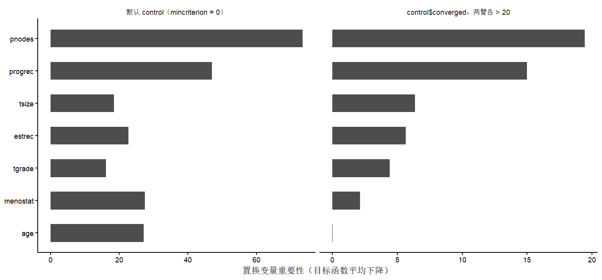

3. pmforest() 与 gettree()
默认 control 为什么长这样，以及自己传 control 时必须抄全的五项
pmforest() 把第 1 页的树重复很多次，得到一片森林。 森林本身不直接给出结论——它的产物是相似性权重， 供 pmodel() 算个体化模型、供 varimp() 算变量重要性。
签名
pmforest(
model,
data = NULL,
zformula = ~ .,
ntree = 500L,
perturb = list(replace = FALSE, fraction = 0.632),
mtry = NULL,
applyfun = NULL,
cores = NULL,
control = ctree_control(teststat = "quad", testtype = "Univ",
mincriterion = 0, saveinfo = FALSE,
lookahead = TRUE, ...),
trace = FALSE,
...
)返回 cforest 对象，类为 c("pmforest", "cforest", "constparties", "parties")。
model、data、zformula 的行为与 pmtree() 完全一致，本页不重复， 只讲森林特有的部分。
perturb——重采样方式
perturb = list(replace = FALSE, fraction = 0.632)| 设置 | 含义 |
|---|---|
replace = FALSE（默认） |
子采样（subsampling），每棵树抽 fraction 比例、不放回 |
replace = TRUE |
n-out-of-n 自助法 |
fraction |
不放回时抽取的比例，默认 0.632 |
默认用子采样而不是自助法，是因为自助法会让变量重要性偏向高基数变量 （Strobl 等人的经典结果，cforest 系列一贯如此）。 除非有特别理由，不要改成 replace = TRUE。
mtry——每次分裂的候选变量数
默认 NULL，对应 ceiling(sqrt(nvar))。 mtry = Inf 或等于变量总数时退化为 bagging（不做随机变量抽样）。
变量很少时（例如 GBSG2 只有 7 个候选变量），sqrt(7) ≈ 3， 每次分裂只看 3 个变量，相关变量之间的重要性会被摊薄。 做变量重要性排序时可以把 mtry 调大一些看排序是否稳定。
ntree、cores、trace
ntree默认 500。演示可以用 20–50，报告结果不要低于 500：pmodel()的权重来自树的共现频率，树太少时个别观测的权重全为 0， 会退回基模型系数并警告The weights for one observation are all 0, return base coefficients.applyfun/cores直接传给cforest，并行见其文档。NEWS记载 0.9-6 修过多核计算的问题。trace = TRUE显示进度条。
本机耗时参考（GBSG2，n = 686，survreg 基模型，单核 Windows R 4.4.3， 默认 control）：
| 操作 | ntree |
耗时 |
|---|---|---|
pmforest() |
25 | 6.6 秒 |
pmforest() |
50 | 13.3 秒 |
pmodel()（686 人全体） |
50 | 1.5 秒 |
varimp() |
25 | 11.1 秒 |
varimp() 的成本随 ntree × 终末节点数增长， 500 棵树的森林算一次重要性是分钟级。
反直觉的是：加上下一节的 converged 约束之后反而快得多—— 同样的数据，100 棵树只要 7.1 秒、varimp() 5.3 秒。 因为默认设置把每棵树长到 32–33 个终末节点， 而每个终末节点在 varimp() 里都要重新拟合一次模型。
control——默认值与它的代价
这是本页的核心。pmforest() 的默认 control 不是 ctree_control() 的默认值：
| 参数 | ctree_control() 默认 |
pmforest() 默认 |
含义 |
|---|---|---|---|
teststat |
"quad" |
"quad" |
二次型统计量 |
testtype |
"Bonferroni" |
"Univ" |
不做多重比较校正 |
mincriterion |
0.95 |
0 |
任何分裂都被接受 |
saveinfo |
TRUE |
FALSE |
不在节点里存模型，省内存 |
lookahead |
FALSE |
TRUE |
分裂前先试算子节点 |
testtype = "Univ" + mincriterion = 0 是随机森林的标准做法—— 单棵树要长满、靠平均去噪。但在 model4you 里有一个别处没有的后果：
每个节点都要重新拟合含治疗变量的模型。 当某个终末节点里治疗变量只剩一个水平时，update() 会失败。
这不是小概率事件。GBSG2 有 686 人，默认设置下每棵树长出 32–33 个终末节点（实测前三棵：33、32、32）， 平均每节点 21 人；而治疗分配是 440 : 246， 所以典型节点里少数臂只有 7–8 人，切到只剩 0 人并不罕见。
建森林阶段这种树被 converged = FALSE 挡掉或留下，通常看不出问题； 但 varimp() 要对每棵树调用 gettree() → .add_modelinfo() → update(model, data = di) 重新拟合每个终末节点，这时就炸了。
本机实测（GBSG2，survreg 基模型，ntree = 25，5 个种子）：
| 种子 | varimp() 结果 |
|---|---|
| 1 | ❌ 'names' attribute [3] must be the same length as the vector [2] |
| 2 | ✅ |
| 3 | ✅ |
| 42 | ✅ |
| 123 | ✅ |
在另一次会话（同版本、同数据、ntree = 100）里失败形态是 contrasts can be applied only to factors with 2 or more levels， 5 个种子里失败 3 个。同样的代码，成功与否取决于种子， 这很容易被误判成”我的用法写错了”或”varimp 有 bug”—— 根因在建森林阶段，不在 varimp 里。
正确的写法
用 control$converged 钩子强制每个节点两臂都有足够人数。 关键是：一旦自己传 control，上面那五项默认值就全部丢失，必须手工抄全。
ctrl <- ctree_control(teststat = "quad", testtype = "Univ",
mincriterion = 0, saveinfo = FALSE,
lookahead = TRUE) # ← 抄全 pmforest 的默认值
ctrl$converged <- function(mod, data, subset) {
all(table(data$horTh[subset]) > 20) # ← 两臂各至少 21 人
}
set.seed(2)
frst <- pmforest(bmod, data = GBSG2, ntree = 25, control = ctrl)效果不只是”不再报错”，而是结果的量级都变了（GBSG2，seed = 2，ntree = 25）：
| 变量 | 默认 control | 加 converged 后 |
|---|---|---|
pnodes |
73.43 | 19.43 |
progrec |
47.00 | 14.99 |
menostat |
27.45 | 2.13 |
age |
27.11 | 0.04 |
estrec |
22.74 | 5.66 |
tsize |
18.55 | 6.35 |
tgrade |
16.17 | 4.40 |

control。 左：pmforest() 的默认设置，age 与 menostat 的重要性和 pnodes 同量级； 右：加上”两臂各 > 20”的约束后，age 掉到 0.04，pnodes / progrec 与其余变量拉开差距。 注意两幅图的横轴刻度不同。
图 194.1 左边那种”所有变量都很重要”的形态，是退化节点的产物： 两臂人数悬殊的节点上治疗系数会剧烈摆动，置换任何变量都会让目标函数明显变化。
个体化治疗效应也一样（同一对森林）：
| 设置 | 最小值 | 中位数 | 最大值 | 与 progrec 的 Spearman |
|---|---|---|---|---|
| 默认 control | −1.205 | 0.366 | 21.326 | 0.281 |
converged 两臂 > 20 |
−0.041 | 0.332 | 0.741 | 0.730 |
默认设置下最大值 21.3 出现在 log 时间比尺度上， 意味着”该病人用药后生存时间乘以 \(e^{21.3}\)“——显然是某个退化节点的产物。 加约束后不但范围回到合理区间，与真实修饰变量 progrec 的相关也从 0.28 升到 0.73。
包自带的论文复现脚本（system.file("reproducing_papers", package = "model4you")） 里，2017 年 SMMR 那篇的森林是这样建的：
pmforest(bm, ntree = 100,
control = ctree_control(teststat = "max", testtype = "Univ",
mincriterion = 0.95, minsplit = 40,
minbucket = 30, lookahead = TRUE))mincriterion = 0.95、minsplit = 40、minbucket = 30—— 三项都比默认值保守得多。用 minsplit/minbucket 限制样本量是 converged 之外的另一条路，区别是它按节点总人数限制， 不保证两臂各自够人；治疗分配不均衡时（GBSG2 是 440 : 246）仍可能出问题。
... 的行为与 pmtree() 不同
帮助页对两个函数的 ... 写的是同一句话 （“additional parameters passed on to model fit such as weights”）， 但实现不一样：
pmtree()：...完全不用（见第 1 页）；pmforest()：...出现在control的默认值表达式里ctree_control(..., ...)。R 的惰性求值让它在用户不传control时 被传进ctree_control()。
实测确认了这个差别（GBSG2，ntree = 25，seed = 2）：
## 不传 control：... 进了 ctree_control()，生效
fa <- pmforest(bmod, data = GBSG2, ntree = 25, minsplit = 200, minbucket = 100)
fa$info$control$minsplit #> 200
## 树的规模随之改变：前三棵的终末节点数 33/32/32 → 4/3/3
## 同时传 control：... 被丢弃，不报错也不警告
fb <- pmforest(bmod, data = GBSG2, ntree = 25, control = ctrl, minsplit = 200)
fb$info$control$minsplit #> 20 ← ctree_control() 的默认值同一个参数写在同一个函数里，给不给 control 决定它生效与否， 而且失效时没有任何提示。
两条建议：
- 需要改分割控制时，显式构造
ctree_control()传给control，不要依赖...； - 需要加权时，把权重放进基模型，不要指望
...。
gettree()：取出森林里的一棵树
gettree(object, tree = 1L, saveinfo = TRUE, coeffun = coef, ...)返回的是 pmtree 对象，可以用第 2 页的全部方法：
tr1 <- gettree(frst, tree = 1)
class(tr1)
#> [1] "pmtree" "constparty" "party"
print(tr1)因为森林建树时 saveinfo = FALSE（不存模型信息）， gettree(saveinfo = TRUE)（默认）会调用 .add_modelinfo() 当场对每个终末节点重新拟合模型。这既是它慢的原因， 也是上面那些退化节点错误的爆发点——同一条链路正是 varimp() 内部走的。
gettree() 在 partykit 1.3.0 下会打印两行东西，都可以忽略：
Error in get(x, envir = ns, inherits = FALSE) : invalid first argument
Warning: calling partykit methods directly is deprecated, please use the generic那行 Error 来自 partykit 自己的弃用检查（它在生成警告时内部调用 get() 失败），不会中断计算，函数照常返回结果。 varimp() 会对每棵树重复打印一次，ntree = 500 时刷屏但无害。 用 suppressWarnings() 挡不住那行 Error——它是被打印出来的，不是被抛出的。
森林层面的产物看第 4 页（pmodel）与 第 5 页（varimp、pmtest）。